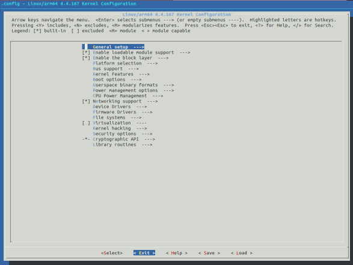
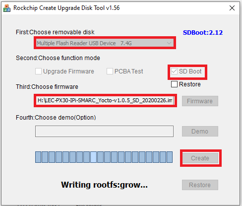
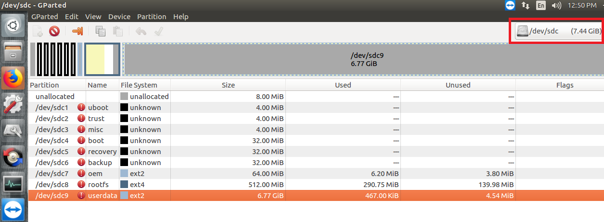
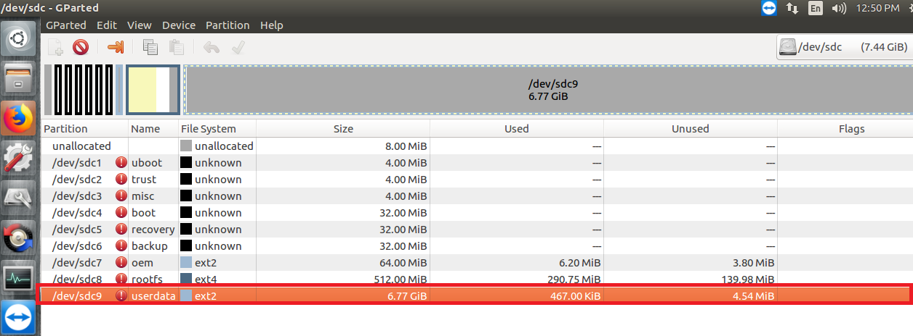
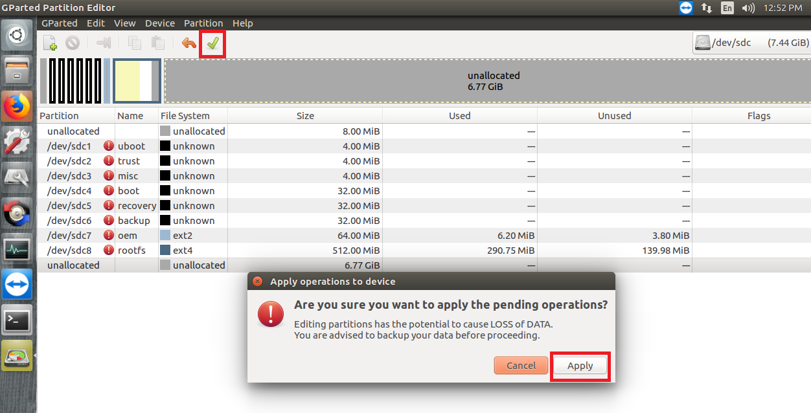
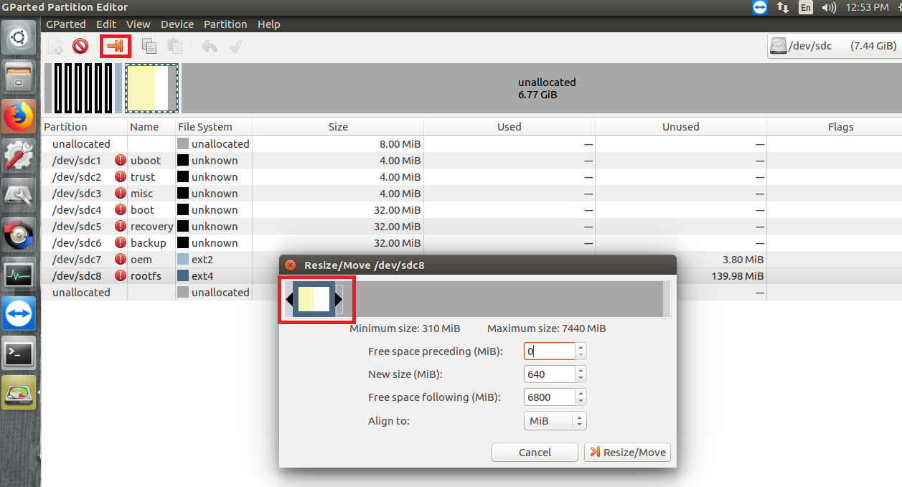
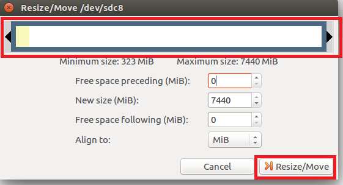

How to Build UbuntuThe procedure to describes how to create Ubuntu image with SD Card on LEC-PX30 with Industrial Pi-SMARC. The version of Ubuntu used is 18.04.3 LTS. Recommended HardwareTo setup the build environment for Ubuntu image creation, a Linux host with the following configuration is recommended. A host machine with adequate processing power and disk space is ideal as the packages can run several GBs in size and the build can take a lot of time. Intel Core-i7 processor (>= 4 cores) 8 GB RAM 1 TB disk space High speed network connectivity OS: Ubuntu 16.04 LTS/Ubuntu 18.04 LTS Update apt repositories list on your host machine. $ sudo apt update Install kernel and u-boot dependencies. $ sudo apt-get install git-core gnupg flex bison gperf build-essential zip curl zlib1g-dev gcc-multilib g++-multilib libc6-dev-i386 lib32ncurses5-dev x11proto-core-dev libx11 dev lib32z1-dev ccache libgl1-mesa-dev libxml2-utils xsltproc unzip device-tree-compiler liblz4-tool Install buildroot dependencies. $ sudo apt-get install libfile-which-perl sed make binutils gcc g++ bash patch gzip bzip2 perl tar cpio python unziprsync file bc libmpc3 git repo texinfo pkg-config cmake tree texinfo Getting StartedThe procedure is to replace buildroot rootfs image with Ubuntu’s one. Step 1: Preparing Ubuntu Root File System: create Ubuntu root file system Image Step 2: Generating Buildroot Image: generate Buildroot SD Card Image Step 3: Flashing buildroot image to SD Card: flash Buildroot SD card image to the prepared SD card by using SD Firmware Tool Step 4: Replacing Buildroot Rootfs with Ubuntu’s one: replace the buidroot rootfs image with Ubuntu’s one on BuildRoot SD Card image Step 1: Preparing Ubuntu Root File System Install QEMU on the development host PC with Ubuntu OS $ sudo apt-get install qemu-user-static Download go to http://cdimage.ubuntu.com/ubuntu-base/releases/18.04/release/ and choose this one: ubuntu-base-18.04.2-base-arm64.tar.gz Create a temporary folder and extract downloaded tarball into the folder. $ mkdir $HOME/temp Extract the file to temp folder $ sudo tar -xpf ubuntu-base-18.04.2-base-arm64.tar.gz -C $HOME/temp Configure the rootfs Get your network ready: $ sudo cp -b /etc/resolv.conf $HOME/temp/etc/resolv.conf Prepare QEMU: $ sudo cp /usr/bin/qemu-aarch64-static $HOME/temp/usr/bin/ Change root: $ sudo chroot $HOME/temp Update and upgrade: $ apt update$ apt upgrade Install the required tools or utilities. While installing the tools/utilities, you will be prompted through GUI menu to make certain selections such as those for date/time/region. Please make the appropriate selections and proceed. $ apt install vim git sudo net-tools ifupdown kmod iputils-ping man wget bash completion alsa-utils apt-utilsusbutils locales i2c-tools netplan.io vnc4server lm sensors usbmount build-essential mesa-utils cmake can-utils sox v4l-utils glmark2 xubuntu-desktop Add user name (here is the example how to add it. You can enter what you want) $ useradd -s '/bin/bash' -m -G adm,sudo adlink Set user’s password (here is the example how to add it. You can enter what you want) $ passwd adlink123 Set the root user’s password (here is the example how to add it. You can enter what you want) $ passwd root Add host name to /etc/hostname(here is the example how to add it. You can enter what you want) $ echo ‘adlink’ > /etc/hostname Add host entry in /etc/hosts $ sudo vim /etc/hosts Add the following configuration: 127.0.0.1 localhost127.0.0.1 adlink After all the work is done, exit the chroot environment. $ exit Add I/O Drivers to Rootfs- Ethernet & CAN Bus Create a directory to copy the Ethernet and CAN kernel modules $ sudo mkdir $HOME/temp/home/adlink/rockchip_test Please click here to download and copy smsc9500.ko, smscusbnet.ko and mcp25xxfd.ko kernel modules into rockchip_test folder from host PC. $ sudo cp <your_path>/*.ko $HOME/temp/home/adlink/rockchip_test/ Use Netplan to enables easily configuring networking on system. Please create a 01-network-manager-all.yaml file under /etc/netplan $ sudo vim $HOME/temp/etc/netplan/01-network-manager-all.yaml Add the following content, then save it. # Let NetworkManager manage all devices on this system network: version: 2 renderer: NetworkManager Note: Netplan enables easily configuring networking on a system via YAML files. Netplan processes the YAML and generates the required configurations for either NetworkManager or systemd-network the system’s renderer. - Audio Please click here to download asound.state file and copy to /var/lib/alsa/ $ sudo cp asound.state $HOME/temp/var/lib/alsa/ - Enable I/O Interfaces Please click here to download and copy Load.sh file to the rockchip_testfolder. Note: it is shell script to insert modules on every reboot $ sudo cp Load.sh $HOME/temp/home/adlink/rockchip_test/Load.sh Give execute permissions to script $ sudo chmod +x $HOME/temp/home/adlink/rockchip_test/Load.sh Please click here to download and copy rc.local to temp/etc/ $ sudo cp rc.local $HOME/temp/etc/ Give executable permissions. $ sudo chmod +x $HOME/temp/etc/rc.local - Adding MRAA Download the adlink-mraa-master.tar file from here and extract and copy the binaries, applications and libraries to respective folders: $ mkdir $HOME/mraa$ tar -xvf adlink-mraa-master.tar -C $HOME/mraa/$ sudo cp -r $HOME/mraa/usr/bin/* $HOME/temp/usr/bin/$ sudo cp -r $HOME/mraa/usr/include/* $HOME/temp/usr/include/$ sudo cp -r $HOME/mraa/usr/lib/libmraa.so* $HOME/temp/usr/lib/$ sudo cp -r $HOME/mraa/usr/lib/pkgconfig/mraa.pc $HOME/temp/usr/lib/pkgconfig/$ sudo cp -r $HOME/mraa/usr/share/* $HOME/temp/usr/share/ Make the Root File SystemExecute the commands below to make the rootfs.img. Notice that you need change the “count” value according to the size of the “temp” folder. Below command will create new rootfs.img file of size 7.4 GB (6.9 GB) $ dd if=/dev/zero of=rootfs.img bs=1M count=7065 status=progress && sync $ sudo mkfs.ext4 rootfs.img $ mkdir rootfs $ sudo mount rootfs.img rootfs/ $ sudo cp -rfp $HOME/temp/* rootfs/ $ sudo umount rootfs/ $ e2fsck -p -f rootfs.img The final root files system rootfs.img is ready. Step 2: Generating Buildroot SD card ImageDownload LEC-PX30 Buildroot SDK and extract it. Note: Use iPIsmarc-es2 branch and root for Creating Custom Images for SD Card Creating Custom Images for SD Card Building. Use git branch command under px30_buildroot/kernel to check the branch version. Change directory to px30_buildroot. $ cd px30_buildroot Run build script. $ sudo ./build.sh After you run “./build.sh”, a menuconfig screen will appear as shown below. Select “Exit” as shown below.  The image will be generated as “update.img” under rockdev folder and will be used in SD Card. Step 3: Flashing buildroot image to SD CardFlash image (generated in Step2) to the prepared SD card by using SD Firmware Tool (this tool is executed on Windows environment) Note: Before going to flash image to SD card, format it. The size should be at least 8 Gb. Download the SD Firmware Tool from SD Firmware Tool Download Link Use SD Firmware Tool to prepare a bootable SD card. Run SD Firmware Tool as a administrator. Select “Removable Disk” as SD card. Choose “Function Mode” as SD boot. Load the SD card image as “Firmware” as shown below.  Select “Create” to prepare SD card. It will prompt user that data will be lost. Select “Yes” to continue. Step 4: Replacing Buildroot Rootfs with Ubuntu’s oneAfter finish step 3, get your SD card to connect to the development Linux Host PC . Unmount the mounted partitions $ sudo umount /dev/sdc* Note: In our case, `/dev/sdc is SD card device name Run GParted by using command line $ sudo gparted Note: GParted is a free partition editor for graphically managing your disk partitions. Please check this link. Select SD card as highlighted in above corner in below picture Select partition 9 and give right click, then select delete Save the changes and select apply  After changes are applied, select close. Select the root fs partition and select resize option above. Partition 8 (/dev/sdc8) is the rootfs partition in below picture.  Increase the size and select Resize/Move option  Save the changes and select apply Close the GParted and eject SD card. Also connect your SD Card to the development Linux Host PC. Run lsblk command to get the path for mounted rootfs partition Remove the existing contents as this file system is the default build root file system. $ sudo rm -rf <mount_path>/*$ sync For example, the required partition is sdc8 here with path /media/nhcpc20011/ac09cb0f-0d9b-4441-902c-bf48b1f10127/ Create a temporary directory and mount the rootfs.img, which is prepared at Step 1: Preparing Ubuntu Root File System $ mkdir $HOME/sd_temp$ sudo mount rootfs.img $HOME/sd_temp Run the following commands to copy the contents of the ubuntu rootfs.img to the SD card. $ sudo cp -rfp $HOME/sd_temp/* <mount_path>/$ sync$ sudo umount $HOME/sd_temp Eject the SD card. You can directly insert SD card and power on the system to boot using the SD card. Note: The first boot may take over 5 minutes for the desktop screen to appear.